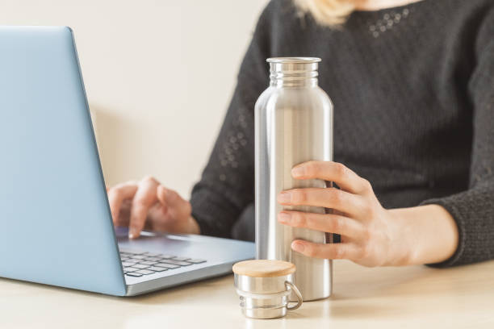

SOLUTION :
- Make sure you're drinking enough water throughout the day, especially while studying.
- The Institute of Medicine recommends about 3.7 liters (or about 13 cups) of total fluids per day for men and about 2.7 liters (or about 9 cups) of total fluids per day for women.
- However, individual needs can vary based on factors like age, weight, activity level, and climate.
Here are some tips to help you stay hydrated while studying:
- Keep a Water Bottle Nearby: Having a water bottle within arm's reach makes it easy to sip on water throughout your study session.
- Set Reminders: If you tend to forget to drink water, set reminders on your phone or use an app to prompt you to take a drink every hour.
- Drink Before You're Thirsty: Thirst is a sign that you're already somewhat dehydrated, so don't wait until you feel thirsty to drink water. Make it a habit to take regular sips throughout the day.
- Monitor Your Urine Color: One simple way to gauge your hydration status is by checking the color of your urine. Pale yellow or straw-colored urine generally indicates that you're well-hydrated, while darker urine may be a sign that you need to drink more water.


By staying properly hydrated, you can help ensure that your brain and body are functioning at their best, making it easier to stay awake and focused while studying.